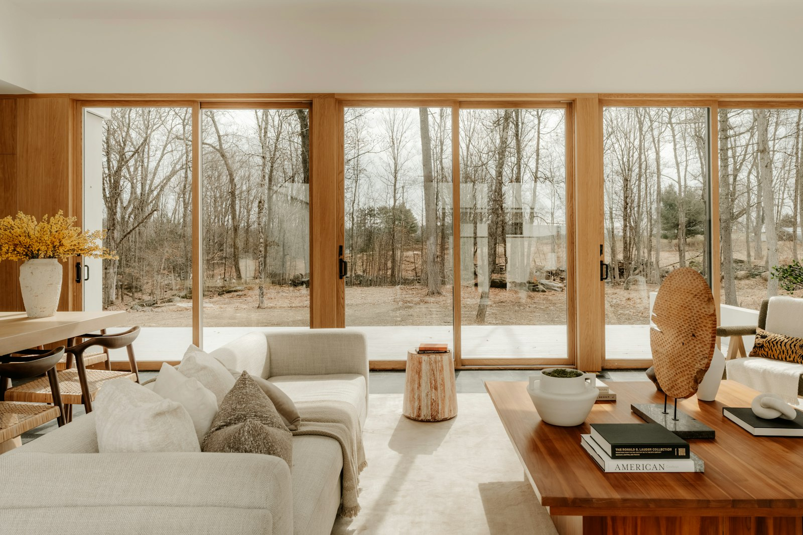

About Us
Seongwon Window
제작부터 시공까지! 창호 도소매 전문업체.
성원창호를 찾아주신 여러분을 진심으로 환영합니다.

인사말
오산 · 화성 전 지역
오산 · 화성 전 지역
창호공사, 샷시,
베란다 샷시 전문
오랜 경력과 노하우를 바탕으로 최고의 만족을 드리겠습니다. 꾸준한 노력과 성실한 자세로 고객을 존중하고, 책임감을 다해 고객의 요구에 꼭 맞는 창호를 만들어 드리겠습니다.
앞으로도 정직함과 성실함으로, 고객님께서 언제나 편하게 찾으실 수 있는 동반자가 되겠습니다. 찾아주신 모든 고객분들께 만족으로 보답하겠습니다.
궁금한 사항은 언제든 전화 주시면 친절하게 안내해 드리겠습니다. 감사합니다.
KCC 성원창호 대표정대남
Business
What We Do
- 01
창호 공사
오산 · 화성 전 지역 아파트, 빌라, 단독주택의 샷시를 교체해요.
- 02
샷시 · 베란다 샷시 제작
화성 정남 공장에서 실측한 치수 그대로 직접 만들어요.
- 03
창호 도소매
KCC 창호와 자재를 도매와 소매로 함께 판매해요.
- 04
상가 · 특수 공사
강화도어, 썬룸, 커튼월, 파티션 공사도 해요.

Location
오시는 길
- 주소
- 경기 화성시 정남면 덕절제기길 41-8지번 덕절리 379
- 대표
- 정대남
- 사업자
- 124-44-15365